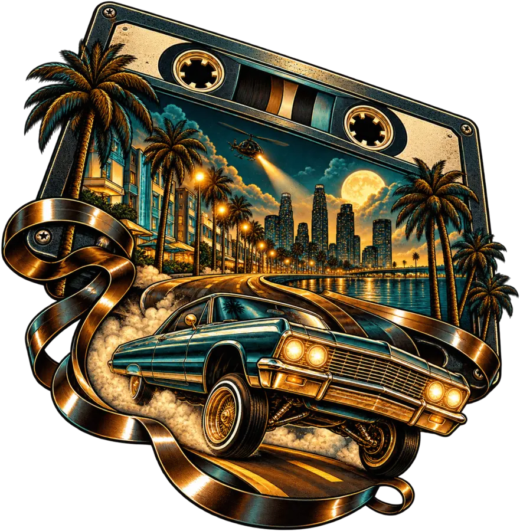

Sound
Heavy bass. Analog warmth. G-funk movement.
West Coast cinematic rap
Lowrider G-funk, heavy drums and cinematic night-drive atmosphere — built independently, released without borders.
01 The sound
West Coast DNA translated into a cinematic universe: deep bass, analog warmth, global influences and nocturnal visuals.
02 Limited edition
Drop 001 / Sold out

Drop 001 / Sold out
Analog Boulevard marked the first Don Rashid artist edition. The complete drop is now sold out and permanently retired.
Drop 001 is permanently retired.
03 The artist
West Coast DNA. Swiss precision. Global vision.
Don Rashid builds a complete universe around the music — lowrider grooves, cinematic darkness and influences that move beyond borders. Every track, visual and future drop carries the same signature.
Explore the channelHeavy bass. Analog warmth. G-funk movement.
Night drives. Chrome reflections. Cinematic scale.
Independent. Recognizable. Built without borders.
04 Independent projects
Different worlds. The same independent spirit. Explore the games and research projects built alongside the music.
Lowrider streets, browser adventures and the worlds of Horse Farm. Find your next place to play.
Explore games WHITE PHOENIX / TRADING RESEARCHA separate workspace for trading-model research, historical comparisons and demo-account preparation.
Visit White Phoenix